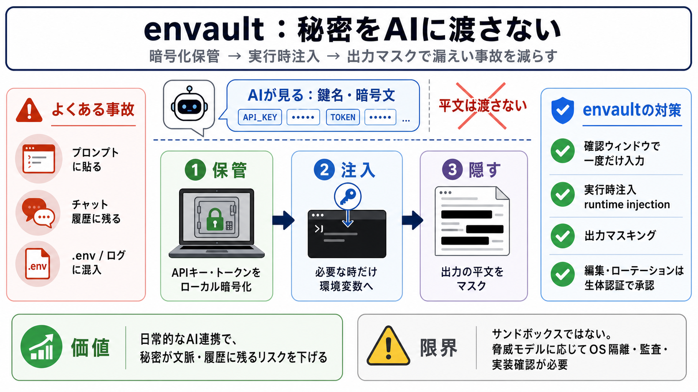

envault - Your Data, Your Way
## Similar Companies [...] AQX Solutions (Environmental Services): (Brisbane, Queensland); Envirada (Environmental Serv…

秘密をAIに渡さない
よくある事故
暗号の倉庫
3つの境界
AIに渡すもの
入力の事故を防ぐ
運用の制御点
正直な境界
従来運用 vs envault
FAQ核心
注入とマスク
過信しない評価
まとめ
参照（要約元）
## Similar Companies [...] AQX Solutions (Environmental Services): (Brisbane, Queensland); Envirada (Environmental Serv…
Title: GitHub - envault/envault: An .env sharing tool for your whole team. · GitHub # Search code, repositories, users, …
Title: Envault Corp. - Penetration Testing & Security Services # Envault Corp. ### Info. ### Rating. #### Rate this comp…
Home - Envault - Your Data, Your Way Data Management that transcends networks and protocols #### Your Data, Your Way####…
Title: Find The Definition Of Envault ### All Tools. #### Find Words. #### Word Tools. #### Word Games. #### Crosswords.…